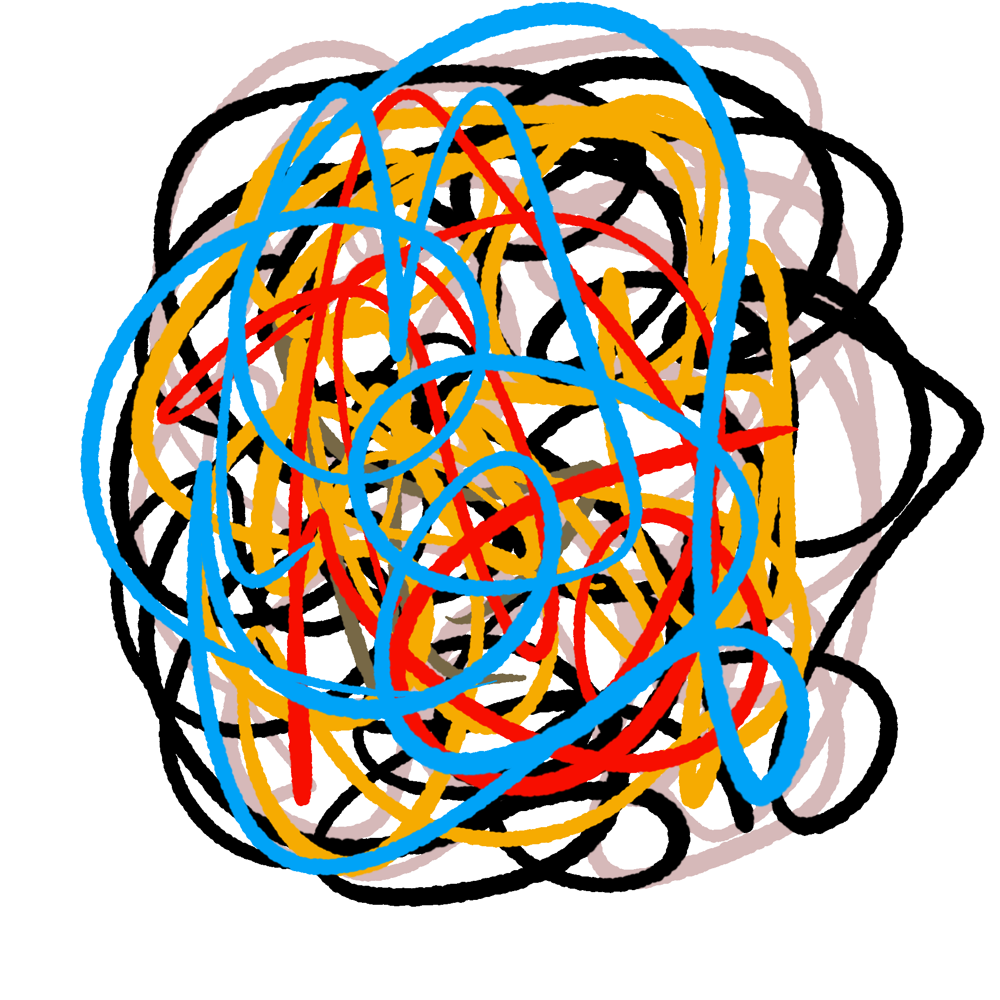
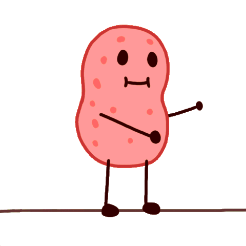
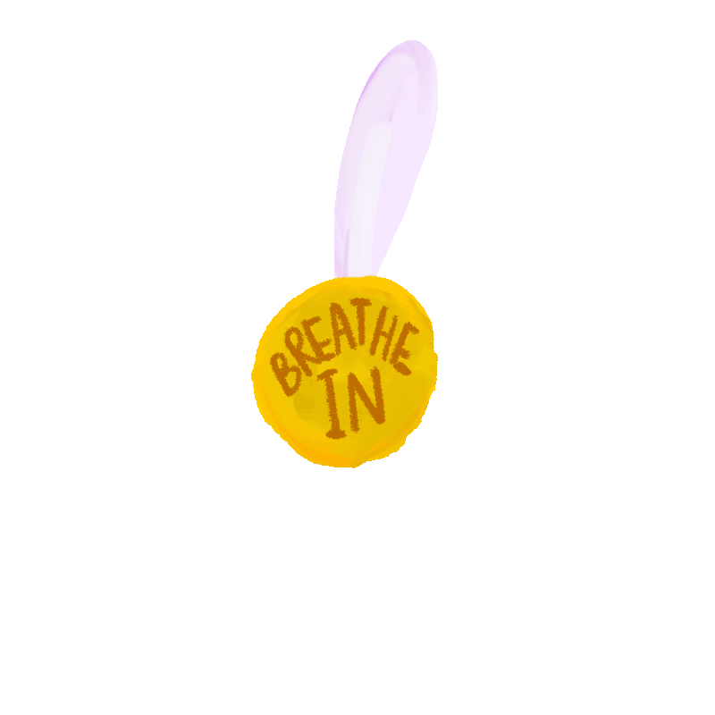

Read this with this song:
x86 refresher
Well this is mostly a refresher to fire up things for CTP course. So let's go back to basics ヅ

what is assembly
Quick intro, well, assembly is a low level programming language, which basically means it is closer to machine code (00001010), but it is also readable, somewhere in the middle of that.
Assembly is different for each processor family or processor itself, it is good to keep checking possible differences between generations just to prevent yourself.
So, for example, you can have MIPS assembly, ARM Assembly, Intel assembly and they will look and feel totally different. Not only that, you can have different architectures, like 32-bit or 64-bit and they will present new opcodes and ways of coding.
(ﾉ◕ヮ◕)ﾉ*:･ﾟ✧
starting history paragraphs just jump if you want
The reason Intel 32-bit processors are commonly called x86 comes from the generations of 32-bit computer chips. There once was a chip called 8086, with a cheaper version called 8088 that was used in a personal computer called IBM PC. An improved version of that chip was made and called 80186, though that wasn't a very popular version. However, an improved improved version was then made, and called 80286. Now, that was a very popular chip, in particular because it was used in a computer called IBM PC AT.
Later, Intel, which created and sold the 8086, 8088, 80186 and 80286 chips, all of which had a 16 bits architecture, saw the need to create a 32 bits chip to compete with similar offerings by others. To take advantage of its incumbent position, it made the new chip capable of running software made for the previously mentioned chips. Naturally, Intel called this new chip the 80386.
By then there were lots of computers using various versions of the Intel chips, and there were also non-Intel chips that were compatible with the Intel ones. So people started referring to them as 80x86.
After a while, Intel launched a new chip, but it decided to drop the 80, so it became the 486 instead of 80486. Likewise, people were dropping the "80" from the front of "80x86", and calling this stuff just x86.
I might have bored you with all this talking, but what I feel when learning assembly is like traveling through computer history. Their changes are also the changes in technology and time. I find it very pleasant.
ending history paragraphs
✧ﾟ･: *ヽ(◕ヮ◕ヽ)
So TL;DR, they named IA-32 for the 32-bit version of the x86 instruction set architecture designed by Intel and first implemented in the 80386 microprocessor in 1985 and IA-64 for the 64-bit version in 2001 or so. I could talk about these nuances all day, after all computer history looks more like this:

...so if you feel overwhelmed, it's alright :3
Disclaimer you will see people saying "ARM x86", that is weird, I know, but people just got confused overtime. It's understandable lol, you might want to correct them politely :)
Few commands to get to know your processor:
Like it or not, it will be your friend and enemy for this journey.
For Ubuntu or anything like it lol:
cat /proc/cpuinfolscpuhardinfolshwnprocdmidecodecpuidinxi
Windows:
wmic cpu get captioncho %PROCESSOR_ARCHITECTURE% %PROCESSOR_IDENTIFIER% %PROCESSOR_LEVEL% %PROCESSOR_REVISION%
MacOS:
sysctl -a | grep machdep.cpu
the GUI ways you can google lol :p
Done with the talking, ready for the code baby! 
Alright, not so ready, though. We have to do some math first. Do you remember anding, data types, converting in hex? If you do, it is flashback time ♪ ۹⌤_⌤۹ ♪
Take this table to your heart:
dec bin hex
0 0000b 0x00 well, so if you don't know, 4 bits are called a nibble. Working with nibbles when doing math is easier. For example:
1 0001b 0x01 I want to AND 0x81204012 to 0xffffffff, both are 32-bit values, but I can work with nibbles, like,
2 0010b 0x02 0x81204012 --> 0010
3 0011b 0x03 AND 0xffffffff --> 1111
4 0100b 0x04 2--> 0010
5 0101b 0x05 So, the logic is, I take the last nibble (a.k.a 4 bits), which is "2", and later "f", convert to binary and then AND the binary. The answer is
6 0110b 0x06 0010, which in hex is 2, and that is it. Maybe I confused you right... You can check it out here: https://youtu.be/H4Z0S9ZbC0g?t=475
7 0111b 0x07
8 1000b 0x08 Moving on, something important to remember are the Primitive C Data Types
9 1001b 0x09 char --> 1 byte --> 8 bits or 2 nibbles (you name it lol)
10 1010b 0x0a short --> 1 word --> 2 bytes --> 16 bits
11 1011b 0x0b int/long --> 1 double word --> 2 words --> 4 bytes --> 32 bits
12 1100b 0x0c double/long long --> 2 double words --> 4 words --> 8 bytes --> 64 bits
13 1101b 0x0d long double --> 5 words --> 10 bytes --> 80 bits ...
14 1110b 0x0e
15 1111b 0x0f Okay, breath in... breath out... is really confusing, but with time you get the ideia :D

Well, there is still a bunch of stuff in the middle between writing x86 assembly by yourself and all the basic concepts, I find it easier to take a top down approach. So, now, finally let's go to coding o/
You can always cross compile with your host machine, but I am using a Ubuntu Desktop 16.04.6 32-bit i386 Little Endian --> http://releases.ubuntu.com/xenial/
Kay, look at this code:
;hello_world.asm global _start section .text _start: ;print hello world mov eax, 0x4 mov ebx, 0x1 mov ecx, message mov edx, mlen int 0x80 ;exit mov eax, 0x1 mov ebx, 0x5 int 0x80 section .data message: db "Hello World!" mlen equ $-message